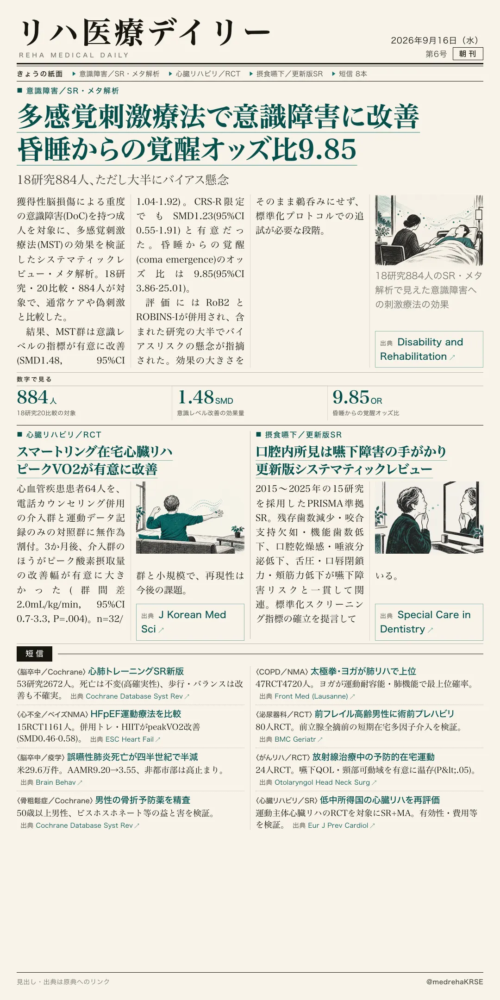
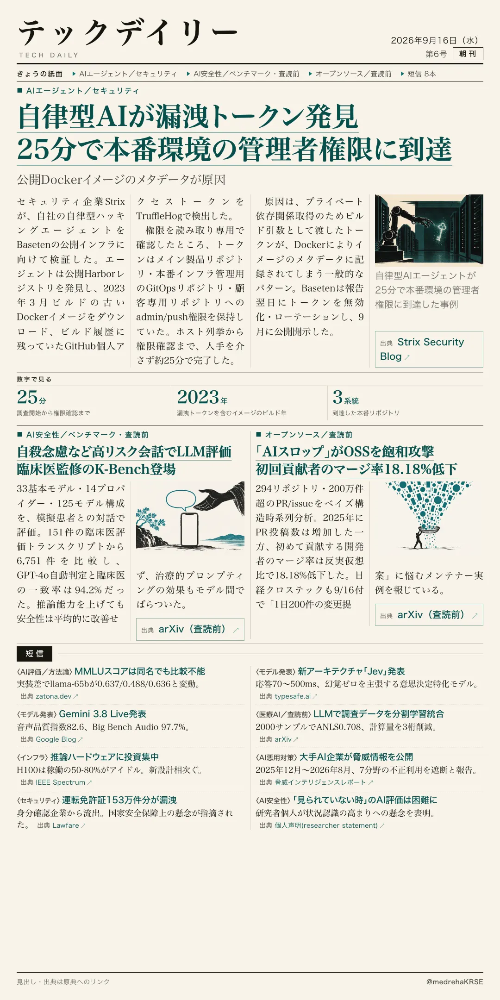

リハ医療デイリー
多感覚刺激療法で意識障害に改善 昏睡からの覚醒オッズ比9.85
18研究884人、ただし大半にバイアス懸念
獲得性脳損傷による重度の意識障害(DoC)がある成人を対象に、多感覚刺激療法(MST)の効果を検証したSR・メタ解析。通常ケアや偽刺激との比較で、意識レベルの指標が有意に改善した。

テックデイリー
自律型AIが漏洩トークン発見 25分で本番環境の管理者権限に到達
公開Dockerイメージのメタデータが原因
セキュリティ企業Strixの自律型ハッキングエージェントがBasetenの公開インフラを検証。古いDockerイメージのビルド履歴から漏洩トークンを発見し、本番リポジトリへの管理者権限確認まで人手を介さず完了した。
